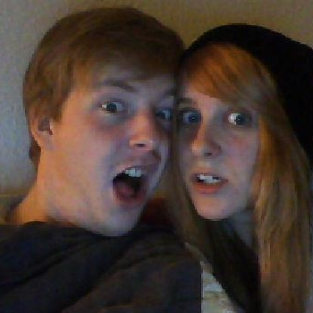
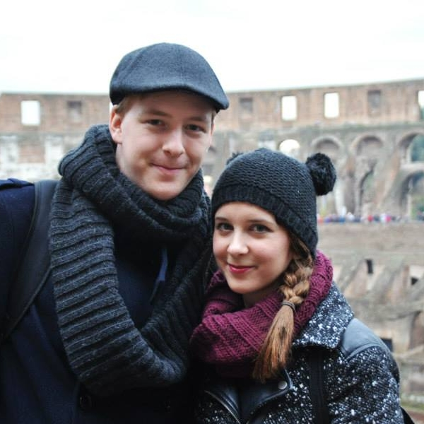
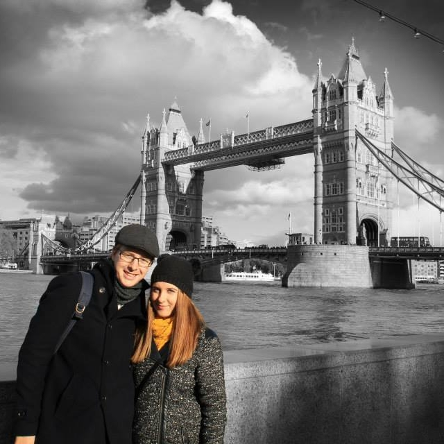
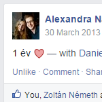
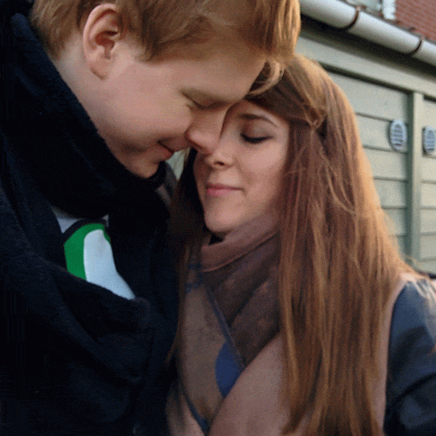
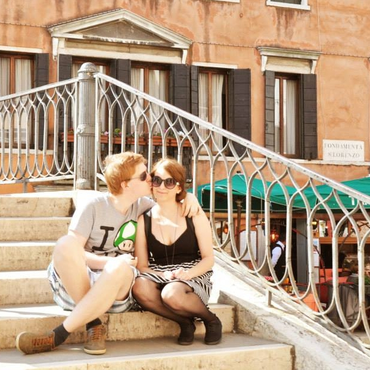
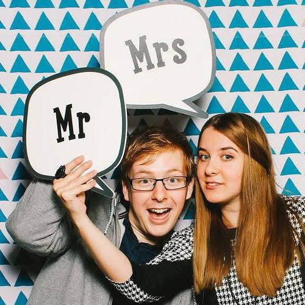

Alig várjuk, hogy együtt ünnepeljünk!
Kérlek jelezd részvételed.
Történetünk
Nagy Alexandra
Szeretettel köszöntelek titeket a weboldalon! Remélem tetszik :)
Annak aki még nem ismer, most szeretnék pár mondatban bemutatkozni. Már 24 éve keresem az útam a nagy világban és most biztosan kijelenthetem, hogy Dani mellett megtaláltam. Mielőtt megismerkedtünk a kommunikáció és média világába kóstoltam bele. Jól elterveztem, hogy ez lesz majd, meg az lesz majd... De a diplomám megszerzése után, jött Dani, és fenekestül felforgatta az életem.
Megismerkedtünk. Egymásba szerettünk.
És ezek után rávett, hogy mennyünk ki Dániába tanulni. Ki is mentünk. Mindig is tudtam, hogy közel állnak hozzám a művészetek, ezért egy olyan szakmát választottam amivel kifejezhetem önmagam, és ötvözhetem korábbi tanulmányaimmal. Dani mindenben támogatott, és nem engedte soha, hogy feladjam. Ma grafikus designer vagyok. És imádom!
Persze mindez, a siker, a mostani életünk, Anyuék nélkül soha nem valósulhatott volna meg. Nem tudom elégszer megköszönni azt amit értem, értünk tettek. A család a legfontosabb legdrágább kincs a világon és a családomnak köszönhetően ez fogja végkísérni a jövőnket is Danival. Hisz a szeretet a törvény. A szeretet a jutalom.
Voltak nehéz idők, lesznek is, de tudom, hogy vele minden akadályon át jutunk majd. Sok mindenen keresztül mentünk, és mindig összetartottunk. Most itthon vagyunk.
Boldogan várjuk az új kihívásokat!
Salamon Dániel
Dani vagyok, és sajnos nem tudok ilyen szépeket írni, de azért megpróbálom:
23 éve járok a világban, ebből utóbbi hármat Szandi oldalán. Az én történetem Győrben indult, ahonnan 19 évesen költöztem el Budapestre.
A Zabhegyezők között híresnek számító Zablakban laktam, mikor hárman Szilárd és Enzo barátaimmal kitaláltuk, hogy részt veszünk egy websorozat készítő versenyen.
Számomra ekkor kezdtek a dolgok érdekessé válni, ugyanis elhatároztam, hogy nem nyugszom míg meg nem hódítom Szandit, akit már fél éve kiszemeltem magamnak a Zirci Bulin. A sorozat készítése alatt Szandi is hozzájárult a csapat későbbi sikereihez és itt ismertük meg egymást jobban.
Ekkor még a BME-n tanultam és első munkahelyemen koptattam jó öreg laptopom billentyűzetét.
Miközben egyre jobban megismertük egymást, úgy ismertem meg saját magamat is. Tudtam, hogy nem mérnök szeretnék majd lenni, ezért kezdett egyre jobban érdekelni egy dániai iskola Computer Science szaka.
Szandival megbeszéltük, hogy szerencsét próbálunk, így mind a ketten jelentkeztünk ebbe az iskolába és fel is vettek minket.
Így kezdődött közös kis életünk.
2012 augusztusában kezdtük el közös életünket úgy igazán. Ekkor költüztünk ki Dániába.
Fél év együtt "járás" után már igazán elköteleztük életünket egymás mellett.

Egy nyárral később már nem is jöhetett más, mint a leánykérés.
Idő közben sikerült eljutnunk sok felé. Meglátogattuk Rómát...
... és Londont is.
Együtt fedeztük fel az idegen országot és egymás jó- és rossz tulajdonságait egyaránt.
2 év után már elkezdtük tervezgetni esküvőnket.
... Velencét ...
És itt vagyunk hát, a leendő Mr. és Mrs. Salamon.
Galéria